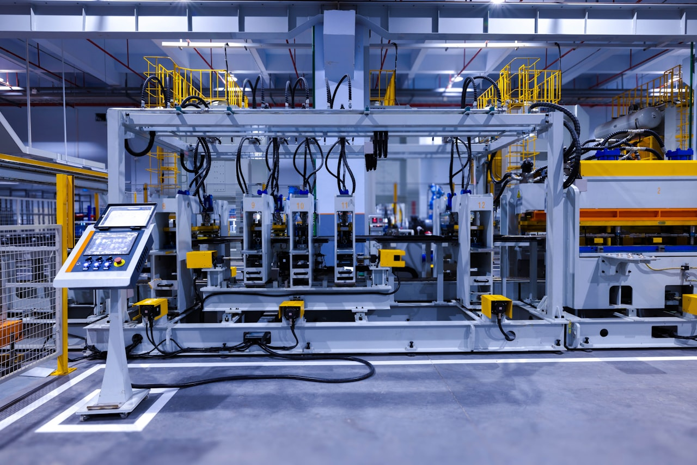

의자·좌석 내구성
좌면·등받이 반복 하중, 다리 전후·측면 하중, 캐스터 주행 시험. BIFMA X5.1 / KS G ISO 7173 대응.

OVERVIEW · 개요
의자·소파·책상·수납 가구의 강도와 내구성을 BIFMA·KS·EN 규격에 맞춰 반복·하중으로 시험합니다. 하중·행정·반복 수를 설정해 무인으로 수명을 재현합니다.
TEST · 시험 항목
좌면·등받이 반복 하중, 다리 전후·측면 하중, 캐스터 주행 시험. BIFMA X5.1 / KS G ISO 7173 대응.
좌면·등받이 반복 착좌, 쿠션 복원 시험으로 장기 사용 내구성을 검증합니다.
상판 하중·처짐, 서랍·도어 개폐 반복, 선반 하중 시험. EN 1730 / KS 대응.
FEATURES · 주요 특징
BIFMA·KS·EN 시험 조건을 프리셋으로 제공, 하중·반복 수 자동 설정.
목표 반복 수까지 24시간 무인 운전, 이상 시 자동 정지·알림.
하중·변위·반복 이력을 기록하고 시험 성적서를 자동 생성합니다.
대상 가구 형상에 맞춘 전용 지그를 설계·제작해 함께 제공합니다.
SPECIFICATION · 상세 사양
| 항목 | 규격 |
|---|---|
| 대응 규격 | BIFMA X5.1, KS G ISO 7173/7174, EN 1728/1730 |
| 하중 범위 | 0 ~ 2,000 N (모델별) |
| 하중 정밀도 | ±0.5% (F.S) |
| 반복 속도 | 10 ~ 40 cpm (조절 가능) |
| 제어·기록 | PC 소프트웨어 · 하중/변위/반복 이력 |
| 제공 범위 | 본체 · 전용 지그 · 소프트웨어 · 설치/교정 |
PROCESS · 시험 절차
대상 가구·시험 규격·하중 조건을 검토합니다.
조건에 맞춘 시험기와 전용 지그를 설계·제작합니다.
현장 설치 후 하중·변위를 교정합니다.
반복 시험 후 데이터·성적서를 제공합니다.
FAQ · 자주 묻는 질문
CONTACT
대상 가구·규격·하중 조건을 알려주시면 최적 시험기를 제안·회신드립니다.